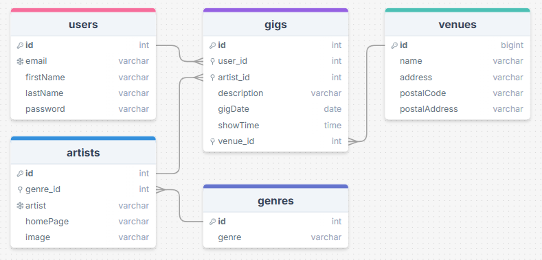

Keikkainfo 2.0
Yleistä
Toteutetaan tietokantapohjainen web-sovellus keikkainfosta. Käyttäjä voi kirjautua sivustolle ja luoda uusia keikkoja. Käyttäjä voi muokata ja poistaa omia keikkojaan. Sivuston etusivulla on mahdollista edelleen hakea ja suodattaa tulevia ja menneitä keikkoja.
Tietokanta
Toteuta tietokannan luonti migrations-työkalun avulla kuten fanikaupassa. Laadi seed-tiedostoissa sopivat testidatat. Lisää seed-tiedoston avulla tietokantaan ainakin valmiiksi joukko genrejä, keikkapaikkoja sekä artisteja.

Toiminnot
Perustoiminnot sivustolla
- keikkojen selailu ja haku etusivulla
- uuden käyttäjän rekisteröityminen
- kirjautuneen käyttäjän toiminnot:
- uuden keikan lisääminen
- keikan tietojen muuttaminen
- keikan poistaminen
Edistyneet toiminnot
- uuden genren lisääminen, muokkaaminen ja poistaminen
- uuden artistin lisääminen, muokkaaminen ja poistaminen
- uuden keikkapaikan (venue) lisääminen, muokkaaminen ja poistaminen
Julkaisu
Julkaise sovellus cPanelin avulla ja liitä osaksi portfoliotasi.